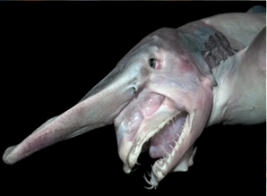

СЕМЕЙСТВА Скапаноринховые (Mitsukurinidae)
ГЛУБИНА:от 200 до 1300 метров
КОГДА ОТКРЫЛИ:в 1898 году. Первую особь выловили у берегов Японии
ТИП ПИТАНИЯ:глубоководный хищник, питающийся рыбой, кальмарами, осьминогами и ракообразными
Охотничья стратегия: Акула использует свои уникальные, эластичные челюсти, которые способны выдвигаться далеко вперед, втягивая добычу вместе с водой.
Использование электрорецепции: Длинный носовидный вырост (рострум) покрыт электрорецепторами, которые помогают находить жертв (рыб, кальмаров, ракообразных) на дне или в полной темноте.
Экономия энергии: Из-за обитания на большой глубине и медленного метаболизма акула, вероятно, не преследует жертву, а поджидает ее, действуя как хищник из засады.
Малоизученность: Досконально поведение не изучено, так как вид обитает в условиях высокого давления и вечной темноты.
Ареал и глубина: Встречается во всех океанах, особенно возле Японии. Живет на глубинах от 200 до 1300 метров.

наверх